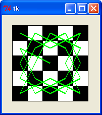
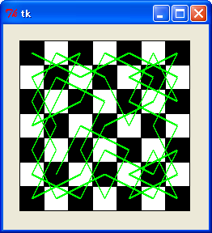
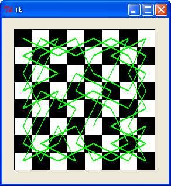
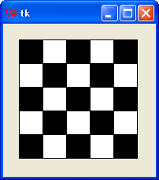
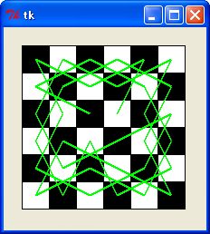
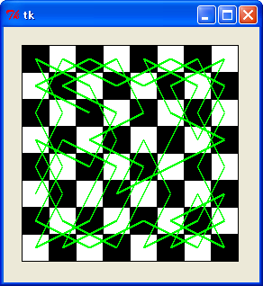

はじめに
今回は「欲張り法 (greedy strategy) 」というアルゴリズムを取り上げます。欲張り法は文字どおり欲張りな考え方に基づくアルゴリズムで、欲張りアルゴリズム (greedy algorithm) と呼ばれることもあります。簡単な例ですが、お釣を払うときに硬貨の枚数を最小にする払い方は、欲張り法で求めることができます。たとえば、765 円のお釣を払う場合、500 円硬貨 1 枚、100 円硬貨 2 枚、50 円硬貨 1 枚、10 円硬貨 1 枚、5 円硬貨 1 枚の計 6 枚が硬貨の枚数を最小にする払い方です。これは、「高額の硬貨から順番に使って払う」という方法で実現できます。つまり、高い硬貨から使っていくという点で「欲張り」なわけです。
ところが、硬貨の種類が異なると、欲張り法では最適解を求めることができない場合もあります。たとえば、25 円硬貨はあるが 5 円硬貨はないとしましょう。40 円のお釣を払う場合、欲張り法では 25 円硬貨 1 枚、10 円硬貨 1 枚、1 円硬貨 5 枚の計 7 枚になりますが、10 円硬貨 4 枚の方が枚数は少なくなります。
このように、問題の条件によっては欲張り法で最適解を求めることはできません。したがって、欲張り法を使って問題を解く場合は、それが最適解になることを証明する必要があります。ただし、最適解を求める方法がたいへん難しい問題では、近似解を求める方法として欲張り法を使う場合があります。
今回は欲張り法の例題として、最短経路を求める「ダイクストラのアルゴリズム」と「騎士の巡歴 (Knight's Tour) 」というナイト (チェスの駒) を使ったパズルを取り上げます。
●最短経路の探索
拙作のページ 経路の探索 では、最短経路 (手数) を求める方法として「幅優先探索」を紹介しました。求める経路が一つ、つまり A 地点から B 地点までの経路であれば簡単に求めることができますが、ある地点から全ての地点に対しての最短経路が必要な場合、幅優先探索では (頂点の総数 - 1) 回処理を繰り返さなくてはいけません。
また、経路の探索 で求めた最短経路は、通過する頂点の数が最小の経路であり、実際の距離ではなく最短手数を求める方法です。この方法では、最短時間や最小コストの経路を求める場合、簡単に応用することはできません。たとえば、次の経路図を見てください。
10 10
Ａ──Ｂ──Ｃ
20／ ＼ ＼20
／ ＼ 30 ＼
Ｄ ＼ Ｅ
＼20 ＼ ／
＼ ＼ ／20
Ｆ──Ｇ──Ｈ
10 10
図 : 経路図
数字はその区間の運賃を表しています。ここで、A 地点から E 地点への最小コストの経路を求めることを考えます。単純な幅優先探索では、最初に A - H - E という経路が見つかりますが、そのコストは 50 です。これに対し A - B - C - E という経路は、コストが 40 でこちらの方が安上がりになります。
このような場合、「ダイクストラ [*1] のアルゴリズム」を使うと、出発地点から全ての地点に対する最小コストの経路を求めることができます。
[*1] E. W. Dijkstra は構造化プログラミングの提唱者で、1967 年にいわゆる「goto 論争」に火をつけたことでも有名です。
参考文献 : エドガー・ダイクストラ - Wikipedia
●ダイクストラのアルゴリズム
ダイクストラのアルゴリズムでは、出発点からコストがいちばん安い頂点を一つずつ確定していくことで処理を進めます。まだ確定していない頂点の中から、いちばん安いコストの頂点を選びます。次に、その頂点を通る経路のコストを計算して、まだ未確定の頂点のコストを更新します。そして、その中からいちばんコストが安い頂点を選びます。これを全ての頂点を選択するまで繰り返します。
確定済みの頂点 選択 Ｂ Ｃ Ｄ Ｅ Ｆ Ｇ Ｈ
-------------------------------------------------------
1. (A) 10 ∞ 20 ∞ ∞ ∞ 30
2. (A B) B 10 20 20 ∞ ∞ ∞ 30
3. (A B C) C 10 20 20 40 ∞ ∞ 30
4. (A B C D) D 10 20 20 40 40 ∞ 30
5. (A B C D H) H 10 20 20 40 40 40 30
6. (A B C D E H) E 10 20 20 40 40 40 30
7. (A B C D E F H) F 10 20 20 40 40 40 30
8. (A B C D E F G H) G 10 20 20 40 40 40 30
図 : ダイクストラのアルゴリズム
それでは、経路図において A から各頂点までの最小コストを、ダイクストラのアルゴリズムによって求めてみましょう。まず、出発点 A を確定済みの頂点に登録します。そして、各頂点のコストをテーブルに格納します。最初は A とつながっている頂点 B, D, H のコストを登録します。そのほかの頂点は、つながっていないことを示す∞（無限大）を登録しておきます。これが上図 (1) の状態です。
次に、このテーブルの中から最小コストの頂点 B を選びます。B とつながっている頂点は A と C ですが、A は確定済みの頂点なので除外し、C のコストを計算します。この場合、B までの最小コストはテーブルに登録されているので、その費用に B - C のコストを加算するだけです。その結果とテーブルに登録されている値を比較し、少ないコストであればテーブルの値を更新します。この場合、頂点 C のコストは 20 でテーブルの値は∞なので、テーブルの値は 20 に更新されます。これが (2) の状態です。
次に、この状態の中から最小値を持つ頂点を選択します。このとき、確定済みの頂点は除外するので、頂点 C が選択されます。あとは、全ての頂点を選ぶまで同じことを繰り返すだけです。
ダイクストラのアルゴリズムは、まだ経路が確定していない頂点の中から、最小コストの頂点を選択するところが「欲張り」です。そして、この方法で求めた経路が最適解になることが証明されています。その証明は後回しにして、実際にプログラミングしてみましょう。
●プログラムの作成
まずは、経路図を表すデータ構造を定義します。
リスト : 隣接行列
adjacent = [
[ 0, 10, 0, 20, 0, 0, 0, 30], # A (0)
[10, 0, 10, 0, 0, 0, 0, 0], # B (1)
[ 0, 10, 0, 0, 20, 0, 0, 0], # C (2)
[20, 0, 0, 0, 0, 20, 0, 0], # D (3)
[ 0, 0, 20, 0, 0, 0, 0, 20], # E (4)
[ 0, 0, 0, 20, 0, 0, 10, 0], # F (5)
[ 0, 0, 0, 0, 0, 10, 0, 10], # G (6)
[30, 0, 0, 0, 20, 0, 10, 0] # H (7)
]
経路図は隣接行列を使って表します。隣接行列の場合、経路の有無は 0 と 1 で表すことができますが、今回は各辺に対応するコストを行列に格納します。これを「ラベル付き隣接行列」といい、辺に対応する値を「ラベル」もしくは「重み」といいます。
このグラフは無向グラフなので、行列の対称成分は同じ値になりますが、異なる値であってもダイクストラのアルゴリズムは動作します。たとえば、ラベルを都市間の飛行時間とした場合、気流などの影響により方向によって時間が異なる場合もあるでしょう。このような場合、行列の対称成分は異なった値になります。
次はグローバル変数を定義します。
リスト : グローバル変数の定義 # 定数 MAX_SIZE = 8 MAX_VALUE = 0x10000000 # グローバル変数 visited = [False] * MAX_SIZE cost = [MAX_VALUE] * MAX_SIZE prev = [None] * MAX_SIZE
visited は選択した頂点を記憶するために使用します。cost は出発点から各頂点への最小コストを格納します。出発点から各頂点への経路を再現するために配列 prev を用意します。この配列には一つ手前の頂点を格納します。prev に格納された頂点を逆にたどっていけば、各頂点の経路を求めることができます。
次は、ダイクストラのアルゴリズムをプログラミングしましょう。次のリストを見てください。
リスト : 探索（ダイクストラのアルゴリズム）
def search(start):
cost[start] = 0
prev[start] = start
while True:
min = MAX_VALUE
next = -1
visited[start] = True
# 頂点の選択
for i in xrange(MAX_SIZE):
if visited[i]: continue
if adjacent[start][i]:
d = cost[start] + adjacent[start][i]
if d < cost[i]:
cost[i] = d
prev[i] = start
if min > cost[i]:
min = cost[i]
next = i
start = next
if next == -1: break
# 経路の表示
print_path()
最初に、出発地点 start のコスト cost[start] を 0 に、prev[start] を自分自身に初期化しておきます。変数 min には最小コストを格納するので、コストの最大値 MAX_VALUE で初期化します。そして、出発点から最小コストにある頂点を選択し、それを変数 next に格納します。この変数は処理終了のフラグを兼ねています。
while ループで頂点の選択処理を行います。ループの先頭で next を -1 に初期化しておいて、頂点の選択処理を実行します。頂点がセットされなければ next の値は -1 のままなので、この値をチェックすることで全ての頂点を選択したことがわかります。
次の for ループで頂点を順番に調べていきます。変数 i が頂点を表します。まず visited[i] をチェックし、既に選択済みであれば continue でループを継続します。その次に、直前に選んだ頂点 start と、今調べている頂点 i が接続されているかチェックします。そうであれば、最小コスト cost のチェックを行います。出発点から直前の頂点 start までの最小コストは cost[start] に格納されているので、それに adjacent に格納されているコストを足せば、直前の頂点 start を通る経路のコストを求めることができます。
この値を変数 d にセットします。次の if 文でその値と cost[i] を比較し、d の方が小さいのであれば、start を通る経路の方がコストが安いので cost[i] の値を d に更新します。そして、直前の頂点を格納する prev[i] も start に更新します。そのあとで、最小コストの頂点を選択します。cost[i] が min より小さければ、min と next を更新します。ループが終了すれば、next に最小コストの頂点がセットされています。
最後に、選択した頂点 next を start にセットします。そして、この値が -1 であればループを終了します。start は、最初は出発点でしたが、そのあとは直前に選択した頂点を保持することになります。全ての頂点を選択したら関数 print_path で経路を表示します。
print_path は次のようになります。
リスト : 経路の表示
def print_path():
for i in xrange(MAX_SIZE):
print "%d, prev = %d, cost = %d" % (i, prev[i], cost[i])
経路の表示を行う print_path は、手抜きをして prev と cost の内容を表示するだけです。直前の頂点 prev を逆にたどっていけば、各頂点の経路を求めることができます。あとは search(0) を実行すると、A を出発点とする各地点までの最短経路を求めることができます。結果は次のようになりました。
0, prev = 0, cost = 0 1, prev = 0, cost = 10 2, prev = 1, cost = 20 3, prev = 0, cost = 20 4, prev = 2, cost = 40 5, prev = 3, cost = 40 6, prev = 7, cost = 40 7, prev = 0, cost = 30
A から E の最小コストは 40 で、直前の頂点をたどっていくと経路は A - B - C - E であることがわかります。
●アルゴリズムの証明
それでは、ダイクストラのアルゴリズムが最短経路を与えることを証明してみましょう。
┌── 選択済みの頂点 ──┐
│ │
│ Ｓ(出発点)─→Ｚ─┼───→Ｘ
│ │ ↑ │
│ │ │ │
└───┼──────┼─┘
↓ │
Ｙ──────┘
（Ｓ－Ｙ）＋（Ｙ－Ｚ）＜（Ｓ－Ｚ）は矛盾する
図 : ありえない最短経路
今、出発点 S から X に至る最短経路を求めます。ダイクストラのアルゴリズムでは、出発点 S から選択済みの頂点を通って X に至る経路を選びます。
たとえば、その経路が S - Z - X だったとしましょう。ここで、選択済みの頂点を通らない経路 S - Y - Z - X が最短経路である、と仮定してみます。すると、(S - Y) + (Y - Z) < (S - Z) の関係が成り立つので、(S - Y) < (S - Z) となるはずです。ところが、ダイクストラのアルゴリズムでは、(S - Y) < (S - Z) であれば、Z を選択せずに Y を選択しなければなりません。したがって、Y は選択済みの頂点に属していなければならず、仮定と矛盾することになります。
このことからもおわかりのように、ダイクストラのアルゴリズムでは、まだ未選択の頂点の最短経路を計算し、必ずいちばん近い頂点を選択していくところがポイントになります。それから、もう一つ条件があります。もう気がついた方もいると思いますが、先ほど示した条件式は、重みの値が負の場合だと成立しません。このアルゴリズムが成立するには、重みが非負であることが必須条件になります。距離やコストでは重みが負になることを考えることはないと思いますが、ほかの分野に応用しようとするときには注意が必要です。
●騎士の巡歴 (Knight's Tour)
次は騎士（ナイト）を使ったパズル「騎士の巡歴 (Knight's Tour) 」を取り上げます。なお、このドキュメントは拙作のページ Puzzle DE Programming 騎士の巡歴 のプログラムを Python で書き直したものです。内容は一部重複していますが、ご了承ください。
ナイトはチェスの駒の一つで将棋の桂馬の動きを前後左右にとることができます。次の図を見てください。
┌─┬─┬─┬─┬─┐
│ │●│ │●│ │
├─┼─┼─┼─┼─┤
│●│ │ │ │●│
├─┼─┼─┼─┼─┤
│ │ │Ｋ│ │ │
├─┼─┼─┼─┼─┤
│●│ │ │ │●│
├─┼─┼─┼─┼─┤
│ │●│ │●│ │
└─┴─┴─┴─┴─┘
●：ナイト (K) が動ける位置
図：ナイトの動作
このナイトを動かして、N 行 M 列の盤面のどのマスにもちょうど一回ずつ訪れるような経路を求めるのが問題です。ちなみに、3 行 3 列、4 行 4 列の盤面には解がありませんが、5 行 5 列の盤面には解があります。まずは、バックトラックで全ての解を求めてみましょう。
●バックトラックによる解法
盤面が大きくなると隣接リストを手作業で作るのは面倒になるので、今回は盤面を 2 次元配列で表してみましょう。この場合、ナイトの移動手順は盤面に記録したほうが簡単です。ナイトが訪れていないマスを 0 とし、ナイトの移動手順を 1 から始めれば、移動できるマスの判定を簡単に行うことができます。また、経路の出力も盤面を表示した方が直感的でわかりやすいかもしれません。
次は盤面の構成を考えましょう。単純な 5 行 5 列の 2 次元配列にすると、ナイトが盤面から飛び出さないようにするため座標の範囲チェックが必要になります。このような場合、盤面の外側に壁を設定するとプログラムが簡単になります。下図を見てください。
W W W W W W W W W
W W W W W W W W W W : 壁
W W K _ _ _ _ W W
W W _ _ _ _ _ W W K : ナイト
W W _ _ _ _ _ W W
W W _ _ _ _ _ W W _ : 空き場所
W W _ _ _ _ _ W W
W W W W W W W W W
W W W W W W W W W
図：盤面の構成
ナイトは最大で 2 マス移動するので、壁の厚さも 2 マス用意します。したがって、盤面を表す配列は 9 行 9 列の大きさになります。壁に 0 以外の値 (たとえば 1) を設定しておけば、ナイトが盤面から飛び出して壁の位置に移動しようとしても、盤面の値が 0 ではないので実際に移動することはできません。これでナイトを動かしたときの範囲チェックを省略することができます。
それではプログラムを作りましょう。最初にグローバル変数を定義します。
リスト : グローバル変数の定義 # 盤面の大きさ SIZE = 5 # 移動量 dx = ( 1, 2, 2, 1, -1, -2, -2, -1) dy = (-2, -1, 1, 2, 2, 1, -1, -2)
配列 (Python のタプル) dx はナイトの x 方向の変位、dy は y 方向の変位を表します。現在の座標にこの値を加えることで、次の座標を決定します。
盤面は変数 board で表します。盤面は 2 次元配列で表すので、board は配列の配列 (Python ではリストのリスト) になります。初期化は init_board で行います。次のリストを見てください。
リスト : 盤面の初期化
def init_board():
global board
board = [[1] * (SIZE + 4) for _ in xrange(SIZE + 4)]
for x in xrange(2, SIZE + 2):
for y in xrange(2, SIZE + 2):
board[x][y] = 0
最初に要素が全て 1 の 2 次元配列を生成し、そのあとで壁以外の場所を 0 に初期化します。
次は探索を行う関数 search を作ります。
リスト : 騎士の巡歴
# 探索
def search(n, x, y):
if board[x][y] == 0:
board[x][y] = n
if n == SIZE * SIZE:
print_board()
else:
for i in xrange(8):
search(n + 1, x + dx[i], y + dy[i])
# 元に戻す
board[x][y] = 0
関数 search は引数として手数 n とナイトの座標 x, y を受け取ります。まず、与えられた座標に移動できるかチェックします。これは board[x][y] が 0 であることを確かめればいいですね。次に、その位置に手数 n を書き込みます。n が SIZE * SIZE (25) であればナイトは全てのマスを訪れたので、print_board で盤面を出力します。
そうでなければ、次に移動するマスを選びます。for ループで dx と dy の要素を取り出して x と y の値に加え、search を再帰呼び出しします。それから、board はグローバル変数なので、search を終了するときには board[x][y] の値を 0 に戻すことをお忘れなく。
print_board は壁を除いた盤面を出力するだけなので説明は不要でしょう。詳細は プログラムリスト１ をお読みください。
これでプログラムは完成です。さっそく実行してみましょう。スタート位置は左上隅 (2, 2) です。
1 1 16 21 10 25 20 11 24 15 22 17 2 19 6 9 12 7 4 23 14 3 18 13 8 5 ・・・省略・・・ 304 1 16 11 6 3 10 5 2 17 12 15 22 19 4 7 20 9 24 13 18 23 14 21 8 25
5 行 5 列盤の場合、重複解を含めると解は全部で 304 通りあります。
次は 欲張り法 による解法を説明します。
●プログラムリスト１
# coding; shift_jis
#
# knight.py : 騎士の巡歴
#
# Copyright (C) 2007 Makoto Hiroi
#
# 盤面の大きさ
SIZE = 5
# 移動量
dx = ( 1, 2, 2, 1, -1, -2, -2, -1)
dy = (-2, -1, 1, 2, 2, 1, -1, -2)
# 初期化
def init_board():
global board
board = [[1] * (SIZE + 4) for _ in xrange(SIZE + 4)]
for x in xrange(2, SIZE + 2):
for y in xrange(2, SIZE + 2):
board[x][y] = 0
# 盤面の表示
count = 0
def print_board():
global count
count += 1
print count
for x in xrange(2, SIZE + 2):
for y in xrange(2, SIZE + 2):
print "%2d" % board[x][y],
print
print
# 探索
def search(n, x, y):
if board[x][y] == 0:
board[x][y] = n
if n == SIZE * SIZE:
print_board()
else:
for i in xrange(8):
search(n + 1, x + dx[i], y + dy[i])
# 元に戻す
board[x][y] = 0
# 実行
init_board()
search(1, 2, 2)
●欲張り法による解法
「騎士の巡歴」を解くには、基本的には全ての飛び方を試してみるしか方法がないように思われます。小さな盤面であれば単純なバックトラックで簡単に解くことができますが、大きな盤面になると時間がとてもかかることになります。ところが 参考文献 1 によると、とても単純な規則でナイトの経路を求めることができるそうです。規則の説明を 参考文献 1 (72ページ) より引用します。
ワーンスドロフの規則：あるマスに飛び移ったとき, そのマスからさらに飛び移ることのできる全てのマスを拾い上げる. そして, それぞれのマスからさらに何個のマスに飛び移れるかを数え, 最小の飛び方しかできないマスに飛び移る。ただし, 対象となるマスが 2 個以上あれば, そのなかの任意のマスを選ぶ.
この規則は「欲張り法」と同じです。ワーンスドロフの規則の場合、ナイトの飛び方がいちばん少ないマスを選ぶところが「欲張り」なわけです。実に単純でわかりやすい規則なのですが、参考文献 1 によると、これで確実に全てのマスを訪問できることはまだ証明されておらず、騎士巡歴に関する有名な未解決問題なのだそうです。そこで、実際にプログラムを作って試してみましょう。
●プログラムの作成
最初に盤面を初期化する関数を作ります。次のリストを見てください。
リスト : 盤面の初期化
def init_board():
global board, move_count
move_count = {}
board = [[-1] * (SIZE + 4) for _ in xrange(SIZE + 4)]
for x in xrange(2, SIZE + 2):
for y in xrange(2, SIZE + 2):
board[x][y] = 0
for x in xrange(2, SIZE + 2):
for y in xrange(2, SIZE + 2):
count = 0
for i in xrange(8):
if board[x + dx[i]][y + dy[i]] == 0: count += 1
move_count[(x, y)] = count
各マスの飛び先の個数を辞書 move_count に格納します。キーは座標を表すタプル (x, y) とします。board を初期化したあと、飛び先の個数を求めて move_count にセットします。飛び先はナイトの移動量 dx, dy を使って、board[x + dx[i]][y + dy[i]] で求めることができます。この値が 0 ならばナイトを移動できるので count を +1 します。8 方向全て調べたら、move_count[(x, y)] に count をセットします。
次は、ワーンスドロフの規則で探索を行う関数 search を作ります。次のリストを見てください。
リスト : 探索 (ワーンスドロフの規則)
# 探索
def search(x, y):
global path
path = []
n = 0
while True:
n += 1
board[x][y] = n
path.append((x - 2, y - 2))
if n == SIZE * SIZE: return
# 飛び先の個数を更新
for i in xrange(8):
x1 = x + dx[i]
y1 = y + dy[i]
if (x1, y1) in move_count:
move_count[(x1, y1)] -= 1
# 次の場所を選択
c = 9
for i in xrange(8):
x1 = x + dx[i]
y1 = y + dy[i]
if board[x1][y1] == 0 and move_count[(x1, y1)] < c:
c = move_count[(x1, y1)]
x2 = x1
y2 = y1
#
if c == 9: raise 'not fount next position'
x = x2
y = y2
今回は Tkinter でナイトの経路を表示するため、経路を path に格納します。また、盤面 board にも移動手順を記憶しておきます。これはあとでナイトの経路を周遊コースに変換するときに使います。
まず最初に、移動手順 n を board に、座標 (x, y) を path にセットします。もし、n が SIZE * SIZE と等しくなったならば、全てのマスを訪問したので処理を終了します。そうでなければ、move_count を更新します。飛び先の座標を x1, y1 にセットし、(x1, y1) が move_count にあれば、move_count[(x1, y1)] を -1 します。
それから、飛び先を選びます。for ループで 8 方向の飛び先の中から、move_count が一番少ないマスを選びます。変数 c は飛び先の個数の最大値 8 よりも大きな値 (9) に初期化しておきます。飛び先の座標を x1, y1 にセットします。(x1, y1) が空き場所で、かつ move_count[(x1, y1)] が変数 c よりも小さい場合は、その場所を x2, y2 に記憶し、c の値を更新します。
for ループを終了したあと、c の値が 9 のままであれば、飛び先が見つからなかったことになります。raise でエラーを送出します。そうでなければ、見つけた飛び先 x2, y2 を x, y にセットして、次の飛び先を求めます。
あとは特に難しいところはないでしょう。詳細は プログラムリスト２ をお読みください。
●実行結果
それでは、SIZE が 5, 6, 7, 8 の結果を示します。
 騎士の巡歴 5 行 5 列盤
 騎士の巡歴 6 行 6 列盤
騎士の巡歴 6 行 6 列盤
 騎士の巡歴 7 行 7 列盤
 騎士の巡歴 8 行 8 列盤
確かに、ワーンスドロフの規則でナイトの経路を求めることができました。次は 騎士の周遊 について説明します。
●プログラムリスト２
# coding: utf-8
#
# knight1.py : 騎士の巡歴 (ワーンスドロフの規則)
#
# Copyright (C) 2007 Makoto Hiroi
#
from Tkinter import *
# 定数
SIZE = 5
W = 30 * SIZE + 20 * 2
# ナイトの移動量
dx = ( 1, 2, 2, 1, -1, -2, -2, -1);
dy = (-2, -1, 1, 2, 2, 1, -1, -2);
# ウィンドウ
root = Tk()
# 図形の初期化
def init_canvas():
global c0
c0 = Canvas(root, width = W, height = W)
c0.pack()
#
for y in xrange(SIZE):
n = y & 1
for x in xrange(SIZE):
x1 = x * 30 + 20
y1 = y * 30 + 20
if n & 1:
color = 'white'
else:
color = 'black'
c0.create_rectangle(x1, y1, x1 + 30, y1 + 30, fill = color)
n += 1
# 盤面の初期化
def init_board():
global board, move_count
move_count = {}
board = [[-1] * (SIZE + 4) for _ in xrange(SIZE + 4)]
for x in xrange(2, SIZE + 2):
for y in xrange(2, SIZE + 2):
board[x][y] = 0
for x in xrange(2, SIZE + 2):
for y in xrange(2, SIZE + 2):
count = 0
for i in xrange(8):
if board[x + dx[i]][y + dy[i]] == 0: count += 1
move_count[(x, y)] = count
# 探索
def search(x, y):
global path
path = []
n = 0
while True:
n += 1
board[x][y] = n
path.append((x - 2, y - 2))
if n == SIZE * SIZE: return
# 飛び先の個数を更新
for i in xrange(8):
x1 = x + dx[i]
y1 = y + dy[i]
if (x1, y1) in move_count:
move_count[(x1, y1)] -= 1
# 次の場所を選択
c = 9
for i in xrange(8):
x1 = x + dx[i]
y1 = y + dy[i]
if board[x1][y1] == 0 and move_count[(x1, y1)] < c:
c = move_count[(x1, y1)]
x2 = x1
y2 = y1
#
if c == 9: raise 'not fount next position'
x = x2
y = y2
# 経路を表示する
def draw_line():
global path
for i in xrange(1, SIZE * SIZE):
x0, y0 = path[i - 1]
x1, y1 = path[i]
c0.create_line(x0*30+35, y0*30+35, x1*30+35, y1*30+35,
fill ='green', width = 2.0)
# 実行
init_canvas()
init_board()
search(2, 2)
draw_line()
root.mainloop()
●騎士の周遊
ところで、騎士の巡歴は「どのマスにもちょうど一回ずつ訪れたのち最初のマスに戻ってくること」を条件にする場合があります。これを「騎士の周遊」と呼びます。
「騎士の周遊」の場合、3 行 4 列盤や 5 行 5 列盤には解がありません。また、N 行 M 列の盤面でマスの個数が奇数の場合も、ナイトは出発点に戻ることはできません。これは簡単に証明することができます。次の図を見てください。
 5 行 5 列盤
チェスの盤面は、白黒の市松模様に塗り分けられています。すると、ナイトは白のマスにいるときは黒のマスに、黒のマスにいるときは白のマスにしか移動できません。このため、ナイトは白と黒のマスを交互に移動することになります。
上図の 5 行 5 列盤の場合、黒マスが 13 個で白マスが 12 個あります。黒マスから出発した場合、ナイトは黒白交互に移動していくので、最後にナイトが到達するマスは黒になります。次にナイトが移動できる場所は白マスですが、出発点は黒マスですよね。したがって、最後のマスから出発点に戻ることは不可能であることがわかります。
では、白マスから出発した場合はどうなるのでしょう。この場合、ナイトは白黒交互に移動していくので、12 番目の白マスから 12 番目の黒マスへ移動したあと、13 番目の黒マスが一つ余ることになります。つまり、白マスから出発すると「騎士の巡歴」は解けないのです。
以上のことから、ナイトが出発点に戻るには、白と黒のマスが同数必要であることがわかります。マスの個数が奇数の場合、白と黒のマスは同数ではないのでナイトが出発点に戻ることは不可能、というわけです。
●周遊コースへの変換
騎士の巡歴は「ワーンスドロフの規則」で簡単に求めることができました。そして、ナイトの経路は簡単な方法で周遊コースに変換できる場合があります。それでは、6 行 6 列盤の経路を周遊コースに変換してみましょう。次の図を見てください。
 騎士の巡歴 : 6 行 6 列盤
33 24 3 14 35 22 2 15 34 23 4 13 25 32 1 36 21 28 16 9 18 27 12 5 31 26 7 10 29 20 8 17 30 19 6 11 図 : ナイトの経路
上の図はナイトが飛ぶ順番を表していて、スタート (1 番目) から飛び移れる地点を赤で、ゴール (36 番目) から飛び移れる地点を青で示しています。ここで、13 番目と 14 番目に注目してください。14 番目の位置はスタートに飛び移ることができ、13 番目からはゴールに飛び移ることができます。ここがポイントです。ナイトはスタートから 13 番目まで移動し、ここでゴール (36番目) に飛び移ることができますね。そして、経路を逆順にたどっていけば、14 番目の位置に到達しスタートに戻ることができます。これで、経路を周遊コースに変換することができました。
これをプログラムすると、次のようになります。
リスト : 周遊コースの生成
def make_circule():
global path
x0, y0 = path[0]
x1, y1 = path[SIZE * SIZE - 1]
# start と end は結べるか
for i in xrange(8):
x2 = x0 + dx[i]
y2 = y0 + dy[i]
if (x2, y2) == (x1, y1): return
# 周遊コースへの変換
for i in xrange(8):
x2 = x0 + dx[i] + 2
y2 = y0 + dy[i] + 2
for j in xrange(8):
x3 = x1 + dx[j] + 2
y3 = y1 + dy[j] + 2
if board[x3][y3] + 1 == board[x2][y2]:
# 経路を付け替える位置を発見
k = board[x3][y3]
path1 = path[k:]
path1.reverse()
new_path = path[0:k] + path1
path = new_path
return
raise 'can not make circule'
最初に、スタートとゴールの座標を x0, y0, x1, y1 にセットします。次に、ゴールからスタートに移動できるかチェックします。移動できる場合は、周遊コースは完成しているので処理を終了します。
次の for ループで経路を付け替える位置を探します。スタートからの飛び先を x2, y2 にセットし、ゴールからの飛び先を x3, y3 にセットします。board[x3][y3] の次の地点が board[x2][y2] と等しい場合、周遊コースに変換することができます。経路の後半部分をコピーして、それを reverse() で反転します。あとは、経路の前半部分と反転した後半部分を連結すれば OK です。
ところで、今回はうまく周遊コースに変換できましたが、ワーンスドロフの規則では、この方法で変換できない経路が生成される場合もあります。プログラムで周遊コースを生成する場合、変換できない経路であれば、スタート地点を変更する、またはバックトラックで別の経路を生成する、などの工夫が必要になるでしょう。ご注意くださいませ。
それでは実行結果を示します。
 騎士の周遊 : 6 行 6 列盤
騎士の周遊 : 6 行 6 列盤
 騎士の周遊 : 8 行 8 列盤
●参考文献
- 秋山仁, 中村義作, 『ゲームにひそむ数理』, 森北出版株式会社, 1998
●プログラムリスト３
# coding: utf-8
#
# knight1.py : 騎士の周遊 (ワーンスドロフの規則)
#
# Copyright (C) 2007 Makoto Hiroi
#
from Tkinter import *
# 定数
SIZE = 6
W = 30 * SIZE + 20 * 2
# ナイトの移動量
dx = ( 1, 2, 2, 1, -1, -2, -2, -1);
dy = (-2, -1, 1, 2, 2, 1, -1, -2);
# ウィンドウ
root = Tk()
# 図形の初期化
def init_canvas():
global c0
c0 = Canvas(root, width = W, height = W)
c0.pack()
#
for y in xrange(SIZE):
n = y & 1
for x in xrange(SIZE):
x1 = x * 30 + 20
y1 = y * 30 + 20
if n & 1:
color = 'white'
else:
color = 'black'
c0.create_rectangle(x1, y1, x1 + 30, y1 + 30, fill = color)
n += 1
# 盤面の初期化
def init_board():
global board, move_count
move_count = {}
board = [[-1] * (SIZE + 4) for _ in xrange(SIZE + 4)]
for x in xrange(2, SIZE + 2):
for y in xrange(2, SIZE + 2):
board[x][y] = 0
for x in xrange(2, SIZE + 2):
for y in xrange(2, SIZE + 2):
count = 0
for i in xrange(8):
if board[x + dx[i]][y + dy[i]] == 0: count += 1
move_count[(x, y)] = count
# 探索
def search(x, y):
global path
path = []
n = 0
while True:
#
n += 1
board[x][y] = n
path.append((x - 2, y - 2))
if n == SIZE * SIZE: return
# 飛び先の個数を更新
for i in xrange(8):
x1 = x + dx[i]
y1 = y + dy[i]
if (x1, y1) in move_count:
move_count[(x1, y1)] -= 1
# 次の場所を選択
c = 9
for i in xrange(8):
x1 = x + dx[i]
y1 = y + dy[i]
if board[x1][y1] == 0 and move_count[(x1, y1)] < c:
c = move_count[(x1, y1)]
x2 = x1
y2 = y1
#
if c == 9: raise 'not fount next position'
x = x2
y = y2
# 周遊コースの生成
def make_circule():
global path
x0, y0 = path[0]
x1, y1 = path[SIZE * SIZE - 1]
# start と end は結べるか
for i in xrange(8):
x2 = x0 + dx[i]
y2 = y0 + dy[i]
if (x2, y2) == (x1, y1): return
# 周遊コースへの変換
for i in xrange(8):
x2 = x0 + dx[i] + 2
y2 = y0 + dy[i] + 2
for j in xrange(8):
x3 = x1 + dx[j] + 2
y3 = y1 + dy[j] + 2
if board[x3][y3] + 1 == board[x2][y2]:
# 経路を付け替える位置を発見
k = board[x3][y3]
path1 = path[k:]
path1.reverse()
new_path = path[0:k] + path1
path = new_path
return
raise 'can not make circule'
# 経路を表示する
def draw_line():
global path
path.append(path[0])
for i in xrange(1, SIZE * SIZE + 1):
x0, y0 = path[i - 1]
x1, y1 = path[i]
c0.create_line(x0*30+35, y0*30+35, x1*30+35, y1*30+35,
fill ='green', width = 2.0)
# 実行
init_canvas()
init_board()
search(4, 4)
make_circule()
draw_line()
root.mainloop()